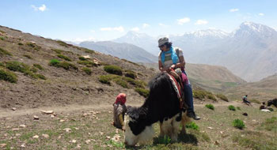

About The Trip
In June 2012, we invited travellers to journey with us through the cold mountain desert of Spiti, nestled in the high Himalayas of India, in Himachal Pradesh. We experienced life in the highest inhabited villages in the Himalayas, were awed by fascinating Himalayan landscapes, explored centuries old Buddhist trails in the region, spotted endangered mountain flora & fauna, and helped conserve the delicate ecology of the valley.
This trip started in Manali, and took travellers up & over the majestic Rohtang and Kunzum passes, and through the enchanting valleys of the Chandra, Spiti and Pin rivers. We took in the sights on the left bank plateau as we acclimatizes to the altitude, did a safari to the highest villages in the world, experienced Spitian culture through traditional homestays and folk performances, rode a yak in the high Himalayas, hiked through Snow Leopard & Himalayan Wolf habitats, discovered fascinating remnants of the Himalayan heritage, mountain biked in some of the most stunning & rugged back country trails, took a glimpse into a well -preserved Buddhist heritage dating back to over 1000 years, savored local Spitian cuisine, volunteered in on-going development & conservation projects, and discovered the magic of what we like to call “the Spiti experience”.
The revenues generated from the trip are being used to:
Pictures From The Trip:

Trip Reviews:
“Our guide Tsering was fantastic as were our pilots/ drivers. And I left India with many new friends and wonderful memories. I am also inspired by the work Ecosphere does and would like to volunteer with them at some point.“
~Ms Sejal Mody, works in Hong Kong, and travelled solo.
“Spiti is truly amazing, interacting with the people out there, made me realize that it is so easy for one to be happy! I would like to congratulate ecosphere and india untraveled, for getting together such a wonderful mix of people. I thoroughly enjoyed interacting with each one of them, their curiosity about the world, was something that I shall take away with me. :) Our guide Tsering was also wonderful, his knowledge about the buddhist monasteries was extremely helpful!
~Mr Adhitya Prakash, works in Pune, and travelled solo.
I had never heard of "Spiti" till I came across a beautiful snap on your website and from that moment on, I had decided that I am gonna go there! The location was amazing -- what blew me off is the onward and return journey (esp the return journey) -- it was so funny, I was sleepy but was keeping my eyes open so that I dont miss on a single amazing view! I especially loved the Kunzum pass :) The homestays were both really nice! It was the first of a kind experience for me and was a good experience -- we even learnt how to make Momos !! The Post office experience was lovely!! The thrill of posting from the highest post office, the lovely stamps, the hospitable postman -- they
even served us tea!! The post cards havent reached though. Not yet :P Overall -- I must say a lovely trip. The hotels selected, the locations, the guide. Looking forward to travelling with India Untravelled again :)
~ Ms Mansee Shah, works in Baroda, and travelled solo.
© Copyright India Untravelled 2015. All Rights Reserved.
Maintained by Axisfusion.in